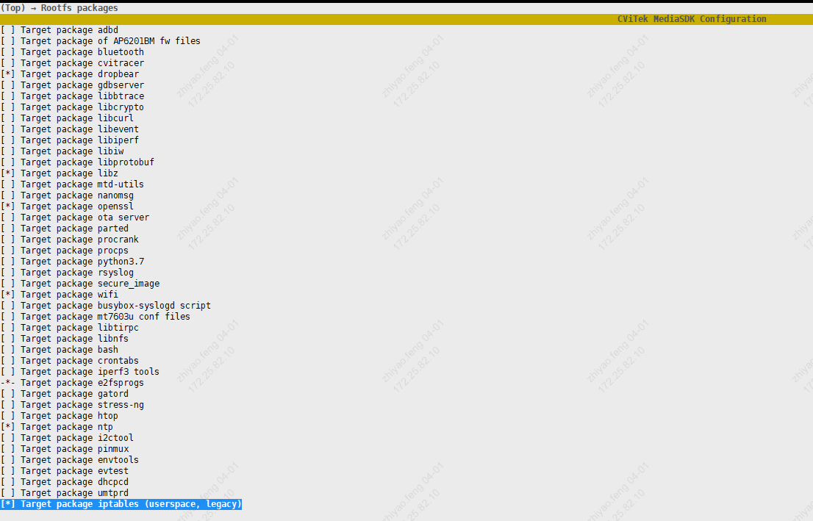
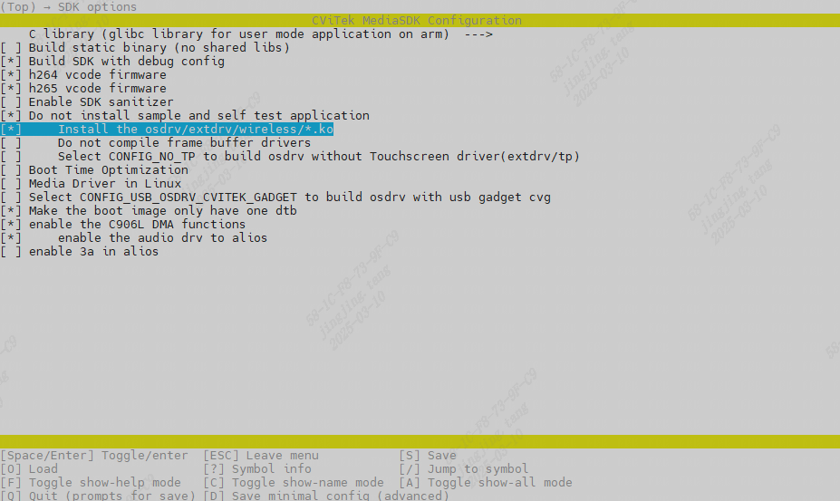

4. Wi-Fi工具¶
操作 Wi-Fi 需要使用 wpa_supplicant、wpa_cli、hostapd 等开源工具。在 CViTek MediaSDK Configuration 中进入 Rootfs packages（菜单路径一般为 Top → Rootfs packages），按需勾选下列与无线及 AP/NAT 相关的包后保存配置，再编译镜像：
Target package wifi：将 wpa_supplicant、hostapd 等打入 rootfs（进入该项后按需打开 wireless 子选项）。
Target package iptables (userspace, legacy)：用户态 iptables；若需在板上做 NAT、转发（参见 CV184x RTL8189FS WiFi 连接流程说明 中 AP 经 eth0 上行等步骤），请一并勾选。
下图为 Rootfs packages 中选中的部分示例（含 wifi、iptables 等；具体列表以你使用的 SDK 版本为准）：
{kind=link}

亦可透过选单进入 Target package wifi 后打开 wireless 选项，存档离开后执行编译（与上文同属 Rootfs packages 菜单）。

{kind=link}

或修改build/boards/{chip_name}/{board_name}/{board_name}_defconfig使能如下选项，再透过命令模式， 执行defconfig $CHIP_$BOARD, 以自动做好配置
#
# Rootfs packages
#
...
CONFIG_TARGET_PACKAGE_WIFI=y
CONFIG_CP_EXT_WIRELESS=y
# end of Rootfs packages
若用户欲更新至最新版本, 可至 http://w1.fi/releases 或是 http://www.linuxfromscratch.org/blfs/view/svn/basicnet/wireless_tools.html 获取，并自行安装至rootfs。
SDK 预编译的 wpa_supplicant、hostapd 等二进制位于 ramdisk/rootfs/public/wifi/musl_arm/``（与 ``packages_arch=musl_arm 一致）；从该目录打包拷贝到板子的步骤见 CV184x RTL8189FS WiFi 连接流程说明。